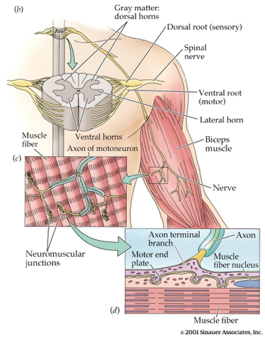

flowchart TD
W(((World)))-->B((Body))
B-->N{Nervous System}
N-->B
B-->W
Action
Big picture
Perception/Cognition/Action Systems
flowchart TD
W(((World)))-->B((Body))
B-->B
B-->|Perception|N{Nervous System}
N-->B
N-->N
B-->W
W-->W
flowchart TD
W(((World)))-->|Light|B((Body))
W--->|Sound|B
W--->|Vibration|B
W--->|Odor/Taste|B
B-->B
B-->|Interoception|N{Nervous System}
B-->|Exteroception|N
N-->B
N-->N
B-->W
W-->W
flowchart TD
W(((World)))-.->B((Body))
B-.->N{Nervous System}
N==>B
B==>W
Our impact
- What types of outputs are there?
- Body to world?
- Nervous system to body?
- How are they produced?
- By the muscles, glands
- By the nervous system
Body \(\rightarrow\) World
- Movements
- Locomotion (move self)
- Manipulative (move other objects/entities)
- Communicative
- Gestures
- Facial expressions
- Secretions, excretions
Nervous System \(\rightarrow\) Body
- Muscle commands
- Autonomic responses
- Endocrine responses
Physical considerations & constraints
- Medium/Environment
- Terrestrial
- Arborial
- Aerial
- Aquatic
- Fossorial
- External forces
- Gravity
- Friction
- Drag
- Internal forces & factors
- Balance/orientation
- Reaction forces, complex dynamics
- Energetics
- Time delays
- Motor equivalence (Lashley, Bernstein)
- Frames of reference, degrees of freedom


Psychological considerations
- Foraging for
- Food
- Shelter
- Mates
- Information
- Defending
- Escaping predators
- Fighting
- Communicating
- Playing
Types of movements

- Reflexes
- Simple, highly stereotyped, unlearned, rapid, acquired early
- vs. planned or voluntary actions
- Complex, flexible, acquired, slower
- Discrete (reaching) vs. rhythmic (walking)
- Ballistic (no feedback) vs. controlled (feedback)
Motor system anatomy
Key ‘nodes’

- Primary motor cortex (M1)


- Non-primary motor cortex
- Basal ganglia
- Brain stem
- Cerebellum
- Spinal cord
Projection pathways
Pyramidal tracts
- Pyramidal cells
- Cerebral Cortex Layer 5 in primary motor cortex (M1)
- Corticobulbar (cortex -> brainstem) tract
- Corticospinal (cortex -> spinal cord) tract
- Crossover (decussate) in medulla
- L side of brain ennervates R side of body

Note
- Anatomically separate ascending (afferent) and descending (efferent) pathways in the spinal cord.
- Ascending (generally) more dorsal; descending more ventral.
- White matter on exterior (unlike cerebral cortex).

Extrapyramidal system
- Tectospinal tract
- Lateral Vestibulospinal tract
- Reticulospinal tract
- Rubrospinal tract
- Involuntary movements
- Posture, balance, arousal
Direct cortical control
- Over some motor neurons.
- In humans; prevalence uncertain in other animals
- For individuated (“fractionated”) movements of fingers, toes, lips, but other muscles, too.

Muscles
- Generate forces
- In one direction
Functional classes
- Axial
- Trunk, neck, hips
- Proximal
- Shoulder/elbow, pelvis/knee
- Distal
- Hands/fingers, feet/toes

Agonist/antagonist pairs

Anatomical types

- Cardiac
- Striated (striped)
- Skeletal muscles
- Voluntary control, mostly connected to tendons and bones
- Smooth
- Arteries, hair follicles, uterus, intestines
- Regulated by ANS (involuntary)
How skeletal muscles contract
- Motor neurons (cell bodies located in ventral horn of spinal cord)
- Project to muscle fiber
- Form neuromuscular junction
- Synapse between motor neuron and muscle fiber
- Release acetylcholine (ACh)

- Motor endplate
- Contains nicotinic ACh receptors
- Activation produces excitatory endplate potential
- Muscle fibers depolarize
- Depolarization spreads along fibers like an action potential
- Ca++ released from intramuscular stores

- Myofibrils
- Contain actin & mysosin proteins
- “Molecular gears”
- Muscle fibers contain bundles of myofibrils called sarcomeres
- Bind, move, unbind in presence of Ca++, adenosine triphosphate (ATP)


Skeletal muscle fiber types

- Fast twitch/fatiguing
- Type II
- White meat
- Slow twitch/fatiguing
- Type I
- Red meat
Muscles as sensory organs

Two skeletal muscle fiber types

Intrafusal fibers
- Sense muscle length and change in length, e.g. “stretch”
- Also called muscle spindles
- Provide muscle proprioception (perception about the self, a form of interoception)
- Sensory function
- Ennervated by by primary Ia afferents (sensory output from muscle)
- Secondary Type II fibers
- Motor function
- Ennervated by gamma (\(\gamma\)) motor neurons (motor input)
Extrafusal fibers
- Generate force
- ennervated by alpha (\(\alpha\)) motor neurons
- No “sensory” role, except for efference copy
- “Copies” of motor output sent to other brain areas
Monosynaptic stretch (myotatic) reflex
- Muscle stretched (length increases)
- Muscle spindle in intrafusal fiber activates
- Ia afferent sends signal to spinal cord
- Activates alpha (\(\alpha\)) motor neuron
- Muscle contracts, shortens length

- Gamma (\(\gamma\)) motor neuron fires to take up ‘slack’ in intrafusal fiber

Note
This is a bit like the role of a belayer in rock climbing.
:max_bytes(150000):strip_icc():format(webp)/HowtoBelay_3-571117903df78c3fa293859d.jpg)

flowchart TD
N{Nervous System} ==>|Alpha motor neurons|B(Extrafusal muscle fibers)
N ==>|Gamma motor neurons|C(Intrafusal muscle fibers)
N ==>|Efference Copy|N
C ==>|Ia spindle afferents|N
C ==>|Secondary afferents|N
Why doesn’t antagonist muscle respond?
- Polysynaptic inhibition of antagonist muscle
- Prevents/dampens tremor
Note
How does the motor system “learn” the sensory consequences of muscle fiber contraction? Could spontaneous “twitches” be involved (Blumberg & Adolph, 2023)?
That is, higher levels of the nervous system learn the relationship between motor neuron output and spindle feedback.
Speed of sensory information propagation
- Brain gets fast(est) propagating sensory info from muscle spindles

Disorders of movement
Parkinson’s Disease
- Slow, absent movement, resting tremor
- Cognitive deficits, depression
- DA Neurons in substantia nigra degenerate
- Treatments
- DA agonists
- DA agonists linked to impulse control disorders in ~1/7 patients (Ramirez-Zamora, Gee, Boyd, & Biller, 2016)
- Levodopa (L-Dopa), DA precursor

Huntington’s Disease

- Formerly Huntington’s Chorea
- “Chorea” from Greek for “dance”
- “Dance-like” pattern of involuntary movements
- Cognitive decline
- Genetic + environmental influences
- Disturbance in striatum
Prospects
- No effective treatment
- But progress in an animal model targeting abnormal protein products (Li et al., 2019)
- Clinical trial focused on gene therapy
 - Ended in 2021 due to safety concerns. - (Andrew & Fox, 2023).
- Ended in 2021 due to safety concerns. - (Andrew & Fox, 2023).
Summing up
- Control of movement determined by multiple sources
- Cerebral cortex + basal ganglia + cerebellum + spinal circuits
Movement: The “real” reason for brains?
What does motor cortex activity encode?
- Muscle contractions?
- Movement trajectories?
- Representational vs. dynamical systems views


Dynamical systems and state spaces
- Movement of the limbs and body
- Activity of the muscles
- Activity of neurons in the spinal cord
- Activity of neurons in the brain…

What does the cerebellum do?
- Predict future sensory states? (Ito, 2008)

Systems perspective
- Cognitive/affective states
- Nervous system states
- Muscle states
- Actions
- Consequences of actions on world states
- Sensory states


 {fig-align= “center”}
{fig-align= “center”}

References
Andrew, K. M., & Fox, L. M. (2023). Supporting huntington’s disease families through the ups and downs of clinical trials. Journal of Huntington’s Disease, 12(1), 71–76. https://doi.org/10.3233/JHD-230565
Blumberg, M. S., & Adolph, K. E. (2023). Infant action and cognition: What’s at stake? Trends in Cognitive Sciences, 27(8), 696–698. https://doi.org/10.1016/j.tics.2023.05.008
Cantú, H., Nantel, J., Millán, M., Paquette, C., & Côté, J. N. (2019). Abnormal muscle activity and variability before, during, and after the occurrence of freezing in parkinson’s disease. Frontiers in Neurology, 10, 951. https://doi.org/10.3389/fneur.2019.00951
Ito, M. (2008). Control of mental activities by internal models in the cerebellum. Nat. Rev. Neurosci., 9(4), 304–313. https://doi.org/10.1038/nrn2332
Li, Z., Wang, C., Wang, Z., Zhu, C., Li, J., Sha, T., … Lu, B. (2019). Allele-selective lowering of mutant HTT protein by HTT-LC3 linker compounds. Nature, 575(7781), 203–209. https://doi.org/10.1038/s41586-019-1722-1
Nielsen, J. B. (2016). Human spinal motor control. Annual Review of Neuroscience, 39, 81–101. https://doi.org/10.1146/annurev-neuro-070815-013913
Powers, W. T. (1973). Behavior: The control of perception. Aldine Chicago. Retrieved from http://www.pctresources.com/Other/Reviews/BCP_book.pdf
Ramirez-Zamora, A., Gee, L., Boyd, J., & Biller, J. (2016). Treatment of impulse control disorders in parkinson’s disease: Practical considerations and future directions. Expert Rev. Neurother., 16(4), 389–399. https://doi.org/10.1586/14737175.2016.1158103
Reynolds, G. (2019). Something in the way we move. The New York Times. Retrieved from https://www.nytimes.com/2019/10/23/well/move/something-in-the-way-we-move.html
Shenoy, K. V., Sahani, M., & Churchland, M. M. (2013). Cortical control of arm movements: A dynamical systems perspective. Annual Review of Neuroscience, 36, 337–359. https://doi.org/10.1146/annurev-neuro-062111-150509
Shine, J. M., Breakspear, M., Bell, P. T., Ehgoetz Martens, K. A., Shine, R., Koyejo, O., … Poldrack, R. A. (2019). Human cognition involves the dynamic integration of neural activity and neuromodulatory systems. Nature Neuroscience, 22(2), 289–296. https://doi.org/10.1038/s41593-018-0312-0